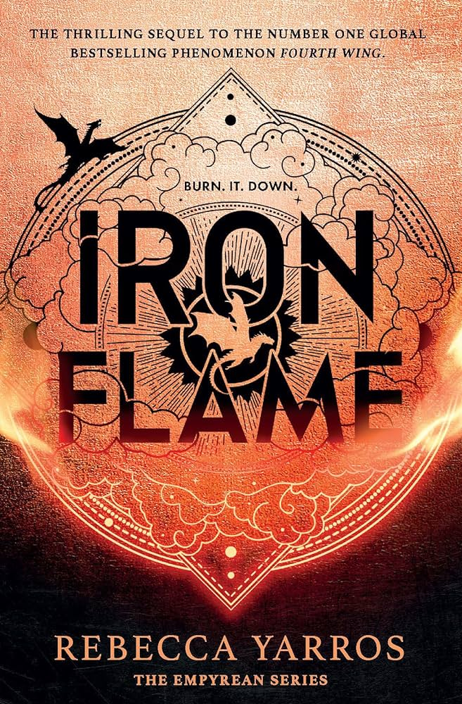
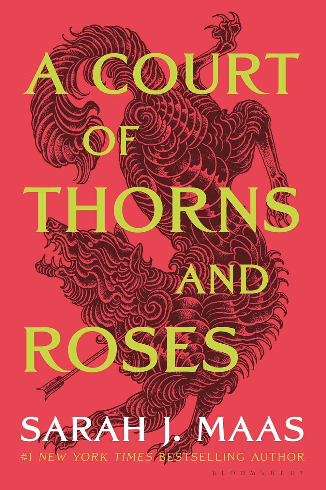
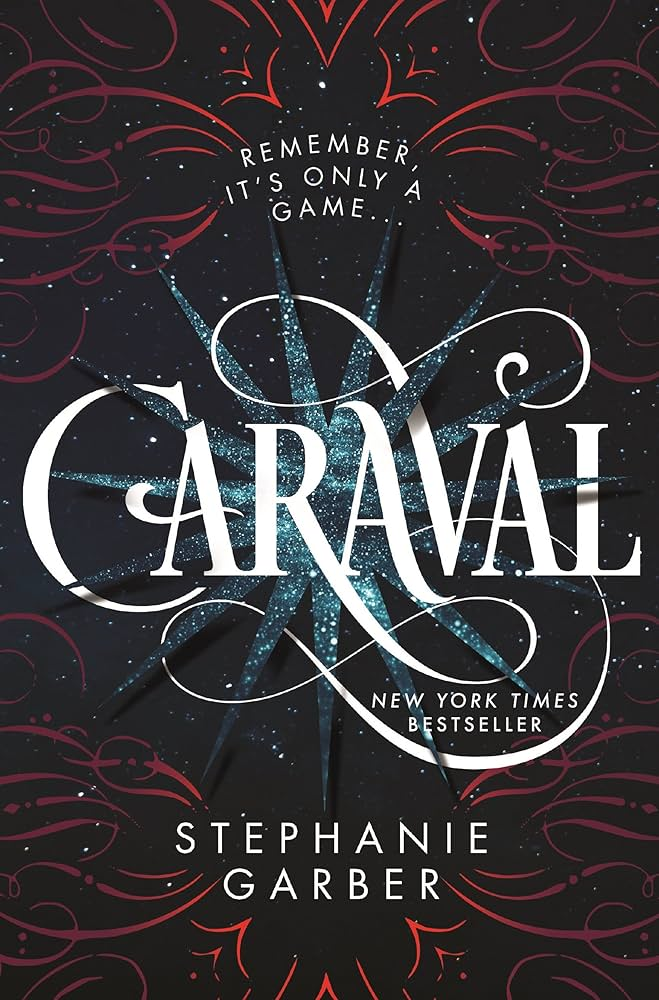
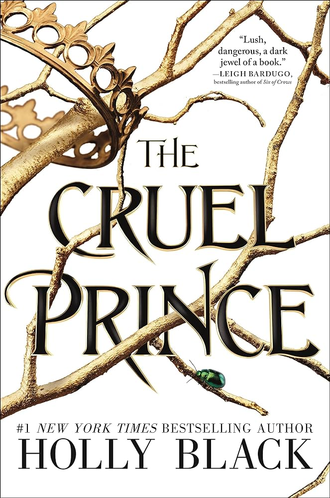
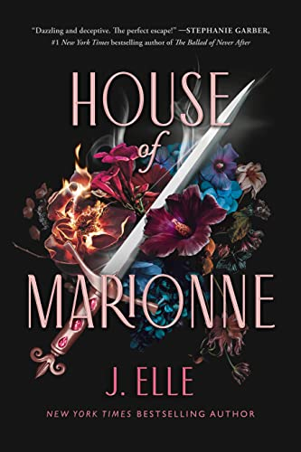
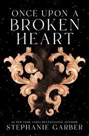

-

Everyone expected Violet Sorrengail to die during her first year at Basgiath War College—Violet included. But Threshing was only the first impossible test meant to weed out the weak-willed, the unworthy, and the unlucky. Now the real training begins, and Violet's already wondering how she'll get through.
-

A fantasy romance novel that follows Feyre, a 19-year-old huntress, and her journey to save her family from a faerie world where she falls for the High Lord of the Spring Court.
-

A tale of two sisters who escape their ruthless father when they enter the dangerous intrigue of a legendary game.
-

The novel follows the mortal, 17-year-old Jude Duarte as she becomes embroiled in the perilous political conspiracies of the immortal Faerie realm.
-

A modern-day YA romantic fantasy series about a glamorous magical world of social elites, forbidden love, and a dark magic that could destroy it all.
-

For as long as she can remember, Evangeline Fox has believed in true love and happy endings . . . until she learns that the love of her life will marry another. Desperate to stop the wedding and to heal her wounded heart, Evangeline strikes a deal with the charismatic, but wicked, Prince of Hearts.